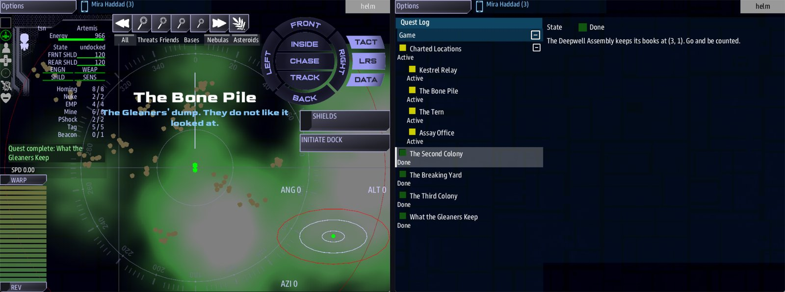

Class 5, Lecture 5 - The map¶
What you will have at the end¶
A galaxy with a face. Two stretches of it have a name, a sky and a temper of their own: one is safe, one is a breaking ground. Three more places are on the map because you put them there: a counting-house that gives a colony's home a name, a dead ship in a nebula, and a wreck with guards on it. And four numbers at the top of the file make the whole galaxy emptier, cloudier and more full of wrecks than the one you were given.

The Bone Pile on arrival, and the Quest Log's Charted Locations.You write four lines in the title record, a Regions chapter, three landmarks and two leads.
The video¶
About 7 minutes. Subtitles are available in the player.
Before you start¶
- Your
MyUniversemission as Lecture 4 left it.kestrel_verge.amdmatchesc5-04-reputation\example\. sbs lint MyUniversesaysclean.- The game closed, and the save deleted:
C:\Cosmos\data\missions\common_data\saves\universe_save_the_kestrel_verge_1.yaml.
Words for this lecture:
| Word | Meaning |
|---|---|
| Kind | What the game decided a system is: a station system, an enemy system, a nebula, an anomaly, or empty |
| Dial | One line that changes how the game makes the galaxy |
| Region | A square patch of the map with a name, a sky, and dials of its own |
| Landmark | One place, in one system, that you put there by hand |
| Derelict | A dead ship. Science can scan it |
Step 1 - How the game fills a system¶
You have been jumping into systems you never wrote. This is how the game decides what is in one. It rolls once for each system, from the seed, and the roll comes out the same every time for that system.
| Kind | What is there | Chance, unless you say otherwise |
|---|---|---|
| Station | A station of the crew's own navy | 15 in 100 |
| Enemy | Fleets of your foe side, or raiders if you have none |
15 in 100 |
| Nebula | Thick nebula, with more loot in it | 12 in 100 |
| Anomaly | Black holes | 8 in 100 |
| Empty | None of those | The rest: 50 in 100 |
Two systems are never rolled. Home, at 0, 0, always has a station. And a side's Home:
always has that side's station.
On top of its kind, a system can have extras.
| Extra | Chance, unless you say otherwise |
|---|---|
| Crates of loot | None, one or two |
| A derelict to scan | 40 in 100. 70 in 100 in a nebula |
| A second, smaller station called an Outpost | 40 in 100, in a system that belongs to a side |
| A minefield | 50 in 100, in a system that belongs to a foe |
Step 2 - The dials¶
Every number in those two tables is a dial. You set one for the whole galaxy by writing its line in the title record, at the top of the file.
The Kestrel Verge is a frontier that was abandoned: few ports, a lot of cloud, a lot of
dead ships. Open kestrel_verge.amd and add four lines under Display:.
# [The Kestrel Verge](kestrel_verge)
---
Universe
Display: The Kestrel Verge
Station mix: 8%
Enemy mix: 12%
Nebula mix: 20%
Derelict chance: 60%
---
All eight dials:
| Dial | What it sets | The game's own number |
|---|---|---|
Station mix: |
How many systems are station systems | 15% |
Enemy mix: |
How many are enemy systems | 15% |
Nebula mix: |
How many are nebula | 12% |
Anomaly mix: |
How many are anomalies | 8% |
Derelict chance: |
The chance a system holds a derelict | 40% |
Outpost chance: |
The chance a side's system has an Outpost | 40% |
Mine chance: |
The chance a foe's system is mined | 50% |
Loot max: |
The most crates of loot in a system | 2 |
Write the percent sign. A dial you leave out keeps the game's own number.
The four mixes are shares of one galaxy, so keep them well under 100 together. Whatever is left over is empty space, and a galaxy needs some.
What those four lines did, counted over the 169 systems nearest home in one game, before the regions of Step 3 were written. The one left over in each column is home.
| Kind | The game's own numbers | With the four lines |
|---|---|---|
| Station | 25 | 15 |
| Enemy | 19 | 16 |
| Nebula | 29 | 40 |
| Anomaly | 7 | 9 |
| Empty | 88 | 88 |
Your own game will not match these to the system. Every new game has a new seed. The shares hold; which system is which does not.
Step 3 - Regions¶
A dial in the title record is the same everywhere. A region is a patch of the map where it is different, and where the sky is different too.
Find ## [Landmarks](landmarks). In front of that heading, add a new chapter. Leave an
empty line above and below it.
## [Regions](regions)
### [The Hollin Fields](hollin_fields)
---
Center: 0, 0
Radius: 2
Skybox: sky1-blue
Color: #44aa66
Enemy mix: 0%
Station mix: 25%
---
Farmed space. Lit lanes, slow freight, and nothing that shoots.
### [The Breakers](the_breakers)
---
Center: -4, -3
Radius: 1
Skybox: sky-neb2-rvb
Music: Artemis2
Color: #cc5522
Enemy mix: 60%
Station mix: 0%
Mine chance: 80%
---
Gleaner country. Every wreck out here was somebody's ship.
| Line | What it means |
|---|---|
## [Regions](regions) |
The chapter. The key must be regions |
Center: |
The system in the middle, as two numbers |
Radius: |
How far it reaches from the center, in systems, in every direction. A region is a square. Radius: 2 is five systems on a side, 25 in all. Radius: 1 is nine |
Skybox: |
The sky the crew sees there. One of the seven names in the table below |
Music: |
The music there: default or Artemis2 |
Color: |
The region's color, as a web color |
| A dial | Any of the eight from Step 2. Inside the region it replaces the galaxy's number |
| The line below the fence | What the place is. For you and your co-writers |
The seven skies:
Skybox: |
The game's own name for it |
|---|---|
sky1 |
Default red |
sky1-blue |
Cosmos |
sky1-ds9 |
subdued blue |
sky1-rainbow |
Rainbow |
sky-bored-alice |
borealis |
sky-delight |
Sailor's delight |
sky-neb2-rvb |
Red vs. Blue |
Three things a region does in play:
- When the crew arrives in one of its systems, the sky and the music change to the region's.
- A system in it with no landmark is named after it on the arrival card: The Hollin Fields, and the system's two numbers under the name.
- Its dials decide what the game rolls there. The Hollin Fields have no enemy systems. In the Breakers about six systems in ten are enemy systems, and none is a port. With only nine systems, your game may have more or fewer.
When two regions overlap, a system belongs to the one written first in the file. So write a small region before the large one it sits inside. These two do not touch.
A region does not move anybody. The Gleaners' home is -3, -2, which is inside the
Breakers because you put the region around it. A side's Home: and a region are two
separate lines that you keep in step yourself.
Step 4 - Three more landmarks¶
You wrote one landmark in Lecture 2, Kestrel Relay. Add three under it, in the Landmarks chapter, with an empty line between records.
### [Assay Office](assay_office)
---
At: 3, 1
Prefab: station
Side: deepwell
Art: starbase_industry
---
Where the Deepwell weighs its ore. Nothing leaves uncounted.
### [The Tern](the_tern)
---
At: 1, -2
Prefab: derelict
Terrain: nebula blue
---
The third colony's ship, circling where she never landed.
### [The Bone Pile](bone_pile)
---
At: -4, -3
Prefab: derelict
Terrain: asteroids
Guards: torgoth
---
The Gleaners' dump. They do not like it looked at.
| Line | What it means |
|---|---|
At: |
The system it is in |
Prefab: |
station or derelict |
Side: |
For a station: the key of the side it belongs to. Leave it out and the station is the crew's own, like Kestrel Relay |
Art: |
For a station: which model it is. starbase_command, starbase_civil, starbase_science or starbase_industry |
Terrain: |
Cover round the landmark: nebula, or asteroids. After nebula you can name a color |
Guards: |
A fleet that waits at the landmark. The word is the kind of ship, one of the six from Lecture 3 |
| The line below the fence | What the crew is told on arrival. One line, of 60 characters or fewer |
What each of these three is for.
Assay Office gives a side's home a name. In Lecture 3 the Deepwell's home had their
station in it, and the arrival card called the system Uncharted (3, 1). A side's home
does not name itself. A landmark does. With this record the card reads Assay Office,
with your line, and the system goes into the crew's Charted Locations. The station
belongs to the Deepwell, so it offers the Deepwell's work.
The Tern is a story you can fly to. A derelict is a dead ship for Science to scan. The game also scatters derelicts of its own, all called Derelict. This one has a name, a line on the card, and a nebula around it whatever the game rolled for that system.
The Bone Pile is a fight. Guards: puts a fleet on a landmark the first time the
crew arrives. When the crew has destroyed it, it does not come back.
The guards belong to nobody. They are raiders, even here in Gleaner country, and a ceasefire with the Gleaners does not call them off.
Step 5 - Two more leads¶
The crew still needs a reason to go. Find ### [The Breaking Yard](lead_gleaners) in the
Narrative chapter, and add two leads under it, above the Dialogue chapter.
### [The Third Colony](lead_tern)
---
Scope: shared
Starts when: at once
Done when: reach 1, -2
---
The Tern never answered. Her last position was (1, -2). Go and see what is left of her.
She was the third colony ship, and the last one out. Nobody has been to look in forty years.
### [What the Gleaners Keep](lead_bone_pile)
---
Scope: shared
Starts when: at once
Done when: reach -4, -3
---
There is a place at (-4, -3) the Gleaners will not talk about. Go armed.
The Third Colony has two paragraphs. A lead is a quest, and the Quest Log shows what is under its fence as a page, the way Class 1, Lecture 8 taught: an empty line between paragraphs. The first paragraph is the order. The second is why anyone would go.
A landmark is not like that. Its arrival card shows the first line only, and cuts it at
60 characters, at a word, with three dots after it. Every landmark line on this page is
60 or fewer. Count yours: VS Code shows the column at the bottom of the window, as
Col 61 when the cursor is just after the 60th character.
Assay Office needs no lead of its own. It is at the Deepwell's home, where The Second Colony already takes the crew.
Step 6 - Check it¶
Save the file.
Each row below was made on purpose, one change to the finished file, then linted, then played.
Mistakes lint finds
| The mistake | What the game does | What lint says |
|---|---|---|
A dial misspelled: Enemy mx: 12% |
Ignores it. The game's own number stands | A warning: "Did you mean Enemy_mix?" (unknown-field). Write it with a space, Enemy mix |
## [Regions](areas) |
No regions. No sky changes, and a system with no landmark reads Uncharted |
A warning on each Center: and Radius: line: "this record is being read as a map" (unknown-field) |
| A region written with two hashes | That region is lost. The others work | The same warning, on that region's two lines |
Side: deepwel on a landmark |
The station is there and belongs to nobody you wrote. It offers no work | A warning: "deepwel is not a side in this mission", with the keys you did declare (dangling-side) |
Prefab: wreck |
Nothing is placed: the game's own wreck needs an Art: line. The card still reads The Tern |
A warning: "The Tern has no Art: line, and the library's wreck prefab never guesses one" (landmark-no-art) |
One warning is wrong. Loot max: 6 works, and lint says "Loot max is not a field a map
has". Leave it, as you left the threshold dials in Lecture 4.
Mistakes lint cannot see
Lint says clean for every one of these.
| The mistake | What the game does |
|---|---|
A mix with no percent sign: Enemy mix: 12 |
Reads it as twelve hundred percent. Three systems in four are enemy systems |
A mix that is a word: Enemy mix: lots |
Nothing runs: no ship, no station |
The four mixes adding up to more than 100: Station mix: 60% and Enemy mix: 60% |
The first ones in the list win. Half the galaxy is stations, the rest mostly enemies, and there are no anomalies and almost no empty space |
| A dial written in the Scenario record and not the title record | Ignored |
A region with no Center: |
The region is nowhere |
A region with no Radius: |
The region is its center system and nothing else |
Radius: one |
Nothing runs: no ship, no station |
A sky that is not one of the seven: Skybox: sky-red |
The sky does not change there. The music still does |
Music: Artemis3 |
The music does not change there. The sky still does |
| A large region written before a small one inside it | The small one never happens. Every system belongs to the large one |
No Side: on a station landmark |
The station is the crew's own, with a market and none of that side's work |
An Art: the game does not have: Art: starbase_huge |
Not seen. The station is given that name for its model |
Guards: klingon |
No guards. mast.runtime.log names the word and lists the six it knows |
Terrain: fog |
No cover |
Two landmarks with the same At: |
Both are there. The card names the one written first, and only that one is charted |
| A landmark's line written on two lines | The card shows the first line only |
So check these by eye:
- Every mix and every chance ends in a percent sign, and the four mixes come to well under 100.
- Every region has a
Center:of two numbers and aRadius:that is a number. - Every
Skybox:is one of the seven, letter for letter. - A small region is written before a large one that overlaps it.
- Every landmark's line is one line, of 60 characters or fewer.
Step 7 - Play it¶
- You start at Kestrel Relay, in the Hollin Fields.
- In the
helmwindow, open the Quest Log. There are four leads now. - Engage The Third Colony. The card reads The Tern, with your line. The dead ship is in the system, in a nebula.
- Engage The Second Colony. Last time the card read
Uncharted (3, 1). Now it reads Assay Office. It is far out, beyond Science's range from where you arrive: engage Assay Office under Charted Locations to fly to it, and scan it on Science. Then on Comms the Assay Office offers the Deepwell's escort. - Engage What the Gleaners Keep. The card reads The Bone Pile. The sky and the music change: this is the Breakers. Ships are waiting, at the Bone Pile itself: it is far out from where you arrive, beyond what Comms shows, so they find you, or you go to them.
- Engage The Breaking Yard. The Gleaners' home has no landmark, so the card reads The Breakers, with the system's numbers under it.
- Open the Quest Log and look at Charted Locations. It holds four places: Kestrel Relay, The Tern, Assay Office and The Bone Pile. Each is a way back.
What you need to know about the map
| Fact | What it means for your story |
|---|---|
The card names a system after its landmark. If it has none, after its region. If it has neither, it reads Uncharted and two numbers |
Put a landmark anywhere you want the crew to remember |
| Only a landmark is charted | A region, and a side's home with no landmark in it, are not in Charted Locations. The crew cannot jump back to them without a job that leads there |
| The sky changes when the crew arrives in a region | A system in no region keeps whatever sky the crew arrived with. If the sky matters, put a region there |
| The galaxy is made from the seed, and every new game has a new seed | Your dials decide how much of each kind there is. Which system is which is different in every new game. Only your landmarks, your sides' homes and your regions stay put |
| A landmark sits on top of what the game rolled | In most games the Bone Pile's system is rolled as an enemy system, so a Gleaner fleet is there as well as the guards. A landmark does not empty its system |
If something goes wrong¶
| What you see | Likely cause |
|---|---|
| No ship and no station. Nothing happens | A dial or a Radius: that is not a number. Read mast.runtime.log |
| Enemies in almost every system | A mix with no percent sign |
The card reads Uncharted in a system that should be in a region |
The region's Center: or Radius: is missing, or the chapter's key is not regions, or a larger region is written before it |
| The sky does not change in a region | The name after Skybox: is not one of the seven |
The Deepwell's home still reads Uncharted (3, 1) |
The Assay Office's At: is not 3, 1 |
| The Assay Office has a market and no escort job | It has no Side: line, so it is the crew's own |
| The Tern is missing | Prefab: is not the word derelict |
| No fleet at The Bone Pile | The word after Guards: is not one of the six kinds of ship. Or the crew has been here before in this save and destroyed it |
| Ships at The Bone Pile attack after a ceasefire with the Gleaners | The guards are raiders. They are nobody's to call off |
| A place is missing from Charted Locations | Only a landmark is charted, and only once the crew has been there |
Exercise¶
- Decide what your galaxy is like in one sentence: crowded or empty, peaceful or dangerous, clear or clouded. Then set the dials that say so. Change no more than four.
- Draw a grid of squares on paper, eleven across and eleven down, with
0, 0in the middle. Mark each side's home. Draw each of your regions as a square. Do any two overlap? Which is written first? - Give each side's home a landmark, so the card names it.
- Write one landmark that is only a story: a derelict with a name and one good line.
- Write one landmark with guards. Choose the ships to suit whoever would be guarding it.
- Play it, and read
mast.runtime.logafterward. It should be empty.
Checkpoint¶
You are done when all five are true:
sbs lint MyUniversesaysclean.- A system in a region with no landmark is named after the region on the card.
- Each side's home is named after a landmark of yours.
- A guarded landmark has a fleet waiting the first time the crew arrives.
- Charted Locations lists every landmark the crew has visited, and nothing else.
Next¶
Lecture 6 is jobs: work a side's station hands out, that the crew can finish and take again, and that pays in credits and in standing.
Further reading¶
- "Painting the map" in the Open Universe writer's walkthrough: regions and landmarks.
- "The dials", in the same walkthrough.
silver_reach.amdin the Open Universe mission has two regions and two landmarks to compare with yours.- Lectures 10 and 11 of this class make a landmark into a place the crew boards, and a ruin the ship flies into.
Download this lecture's finished files (a zip of its example folder).